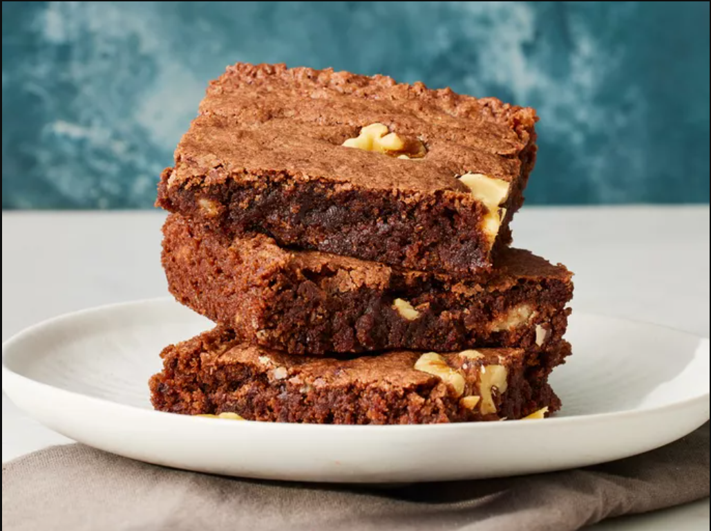

Quick and Easy Brownies

This easy brownie recipe takes minutes to whip up in one bowl and about 20 minutes to bake for a moist and fudgy crowd-pleasing treat!
Bake these easy brownies whenever you need to quickly satisfy your sweet tooth. Made with kitchen staples in a prepared brownie pan, you'll come back to this easy brownie recipe again and again.
- Sugar: These easy brownies start with two cups of white sugar.
- Flour: All-purpose flour creates structure in the batter.
- Butter: 1 cup of melted butter gives the brownies moisture and richness.
- Eggs: Eggs lend even more moisture. Plus, they help bind the batter together.
- Cocoa powder: Of course, you'll need cocoa powder for chocolate brownies!
- Vanilla: Vanilla extract enhances the overall flavor of the brownies.
- Baking powder: Baking powder acts as a leavener, which means it helps the brownies rise.
Steps
- Step 1: Gather all ingredients.
- Step 2: Preheat the oven to 350 degrees F (175 degrees C). Grease a 9x13-inch pan with baking spray.
- Step 3: Whisk sugar, flour, melted butter, eggs, cocoa powder, vanilla, baking powder, and salt in a large bowl until combined.
- Step 4: Spread the batter into the prepared pan.
- Step 5: Decorate with walnut halves.
- Step 6: Bake in the preheated oven until top is crinkled and a toothpick comes out with a few moist crumbs, about 20 to 30 minutes.
- Step 7: Let cool completely in the pan on a wire rack before slicing into squares. Enjoy!
Back